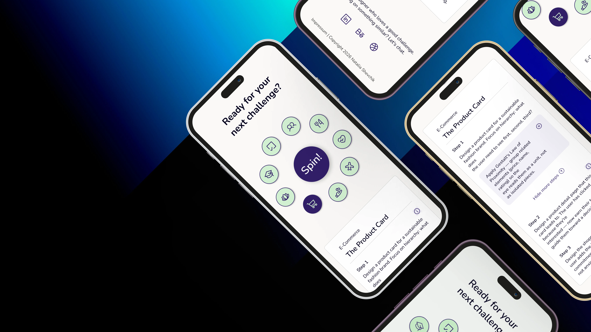
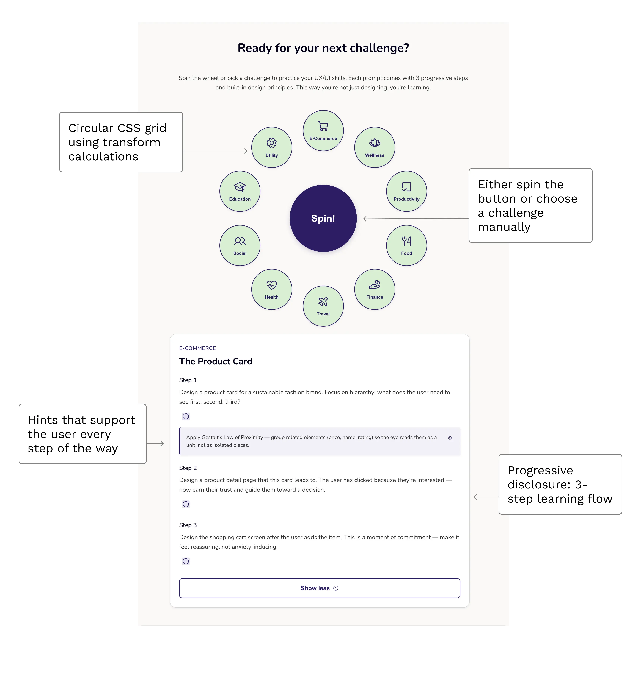

Design Challenge Generator: UX/UI Practice Tool
Role: UX/UI Designer & Front-End Developer · Duration: January-February 2026 · Tools: Figma, HTML, CSS, JavaScript

A web app offering curated UX/UI design challenges with embedded principles. No accounts, no tracking — just practice and learning.
After completing 100 Daily UI challenges, I wanted to create something that combined structured learning with practical design practice. Built to help designers practice with purpose.

Target Audience
Career-changing designers, bootcamp graduates, and self-taught designers building portfolios. Also employed designers maintaining skills and preparing for interviews.
Through my own experience completing Daily UI challenges and conversations with fellow career changers, I noticed a recurring pattern: designers wanted structured practice but felt overwhelmed by guilt-inducing streaks and lacked guidance on design principles.
Understanding the Problem
Problem
Existing challenge platforms tend to have unreliable delivery, create pressure through streaks, and lack educational structure.
Objective
Create a stateless, no-pressure tool with teacher-curated challenges and embedded UX principles that designers can use anytime.
Solution
A single-page web app with 10 structured challenges, spinning wheel interaction, and progressive learning steps.
User Flow
Before building the interface, I mapped out the core user journey. The flow prioritizes simplicity and flexibility — users can spin for randomness or click directly for control. No login gates, no tracking, just immediate access to practice.

From Design to Development
This project gave me the opportunity to apply both design and front-end development skills. Translating the Figma design into a fully responsive, interactive web app involved solving technical challenges around CSS positioning, responsive scaling, and maintaining simplicity without a backend.
{kind=link}
{kind=link}
Basic Features

Style Guide
The design system prioritizes clarity and calm. The color palette combines deep purple with soft green accents on a warm neutral background. Typography uses Nunito throughout for its friendly, approachable character. Components are designed for consistency across all breakpoints.
Colors
Primary
Primary
#301E67
Text on Primary
#FFFFFF
Neutrals
Text Primary
#03001C
Text Secondary
#343434
Border
#D9D9D9
Backgrounds
Surface
#FFFFFF
Background
#FAF9F7
Background Neutral
#E6E6E6
Accents
Node Fill
#D2F0D1
Hint Background
#F3F1F9
Typography
Font Family: Nunito
Heading 1
32px / 2rem · Bold (700) · Line height 1.2
Heading 2
24px / 1.5rem · Bold (700) · Line height 1.3
Heading 3
18px / 1.125rem · Semibold (600) · Line height 1.4
Body / Paragraph text
16px / 1rem · Regular (400) · Line height 1.6
Small text (hints)
14px / 0.875rem · Regular (400) · Line height 1.5
CHALLENGE CATEGORY
14px / 0.875rem · Semibold (600) · Uppercase · Letter-spacing 0.5px
UI Components

User Feedback
After launching the app, I reached out to fellow designers for feedback. Their insights validated the core concept and helped identify areas for future improvement.
That's super cool! I love it! I'm totally going to use this. I really like that you offer a spin option and manual selection. I like the color and typography as well."
The stateless approach is smart. No login, just open and practice. I'd love a 'save challenge' option for when I'm not ready to start right away."
The challenges feel realistic rather than abstract, and the progressive disclosure works really well. Already used it twice this week. A history of past challenges would be a nice touch, sometimes I want to revisit one I did before."
Interested?
Try the Challenge GeneratorInsights & Future Development
Launching this project taught me how much value lives in simplicity. The stateless, no-pressure approach resonated with users, and the educational layer added depth without overwhelming. Looking ahead, there are exciting opportunities to expand while maintaining the core philosophy.
What Worked
- Dual interaction model (spin vs direct selection) gave users control and flexibility
- Progressive disclosure prevented overwhelm — users appreciated seeing Step 1 first
- Optional hints kept the interface clean without sacrificing educational value
- Stateless architecture removed all friction — immediate access resonated strongly
Ideas for Future Development
- Expand the challenge bank beyond the initial 10 challenges
- Introduce AI-powered feedback mechanisms to provide critique on completed work
- Optional account system for users who want to track progress (while keeping stateless as default)
- Community-submitted challenges to diversify prompts and perspectives
- Export challenge details to PDF for offline reference
Key Question from Testing
- Should all 3 steps and principles be immediately visible, or does progressive disclosure reduce overwhelm? User feedback suggests the current approach works for time-pressed designers, but this could be a toggle preference in future iterations.